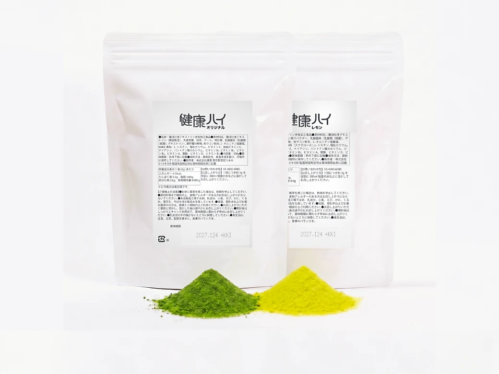
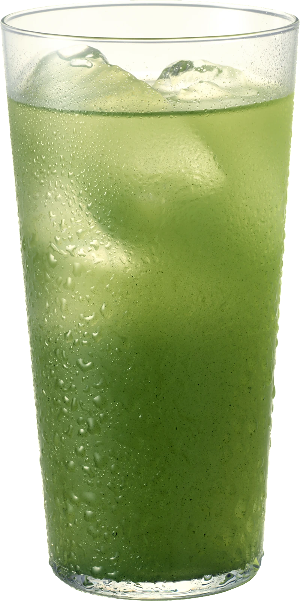
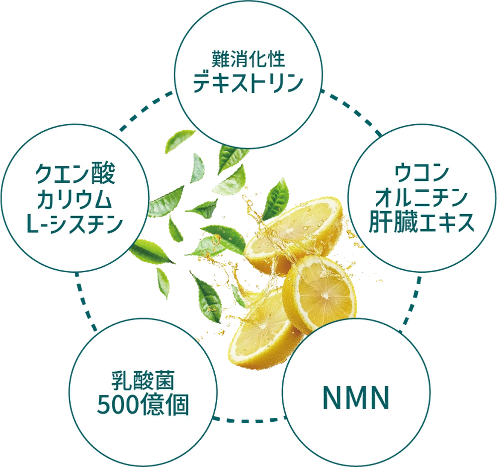
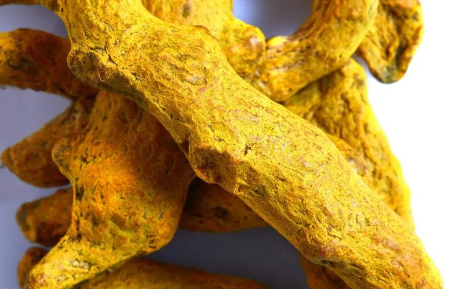
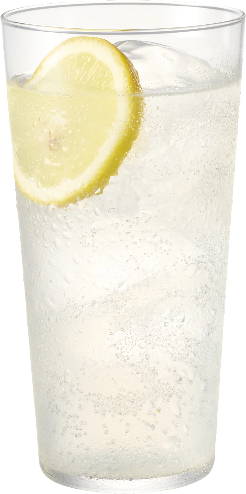

水に溶かして、栄養補給に。
明日葉・ケール・大麦若葉に、国産の抹茶。水やお湯で溶かせば、そのまま青汁抹茶として飲めます。持ち運べる粉末タイプなので、オフィスやお出かけ先でも。食事のバランスや、野菜不足が気になる方に。
粉末だから、溶かすものを変えるだけ。
昼はオフィスで水に。夜は家で焼酎に。
1袋で、一日に二度はたらきます。

オリジナル（青汁抹茶）／レモンサワー からお選びいただけます
1袋で、2つの飲み方

明日葉・ケール・大麦若葉に、国産の抹茶。水やお湯で溶かせば、そのまま青汁抹茶として飲めます。持ち運べる粉末タイプなので、オフィスやお出かけ先でも。食事のバランスや、野菜不足が気になる方に。
いつもの焼酎に小さじ1杯。緑茶ハイの感覚で飲める、青汁抹茶ハイになります。晩酌はもちろん、来客のおもてなしや、家での食事どきにも。お酒を飲まない方は、そのまま水や炭酸水で。
こんな毎日ではありませんか
我慢でも、休肝日でもなく。
健康ハイは「一杯の中身を変える」方法です。
やることは、ひとつだけ
手順 01
氷より先に、グラスへ。
手順 02
付属スプーンでよく混ぜます。
手順 03
オリジナルは水、レモンは炭酸水で。
道具も、手間も増えません。
いつもの晩酌の手順が、ひとつ増えるだけです。
飲みながら、整える

とうもろこし由来の水溶性食物繊維。食事と一緒に摂りたい成分として、広く知られています。
青汁素材に国産の抹茶をあわせた王道ブレンド。クセを抑えているので、お茶の感覚で飲めます。

「飲みの席」の定番として親しまれてきた成分。しじみでおなじみのアミノ酸とあわせて配合。
※ 本品は機能性表示食品・特定保健用食品ではありません。特定の効果・効能を保証するものではありません。
味は2種類
青汁抹茶。水で割って、緑茶ハイの感覚で。和食・中華にもよく合います。

甘さ控えめの王道レモン。炭酸水で割って。焼肉や焼鳥など、こってりした日に。
お酒を入れなければ、ノンアルコールとしてもお飲みいただけます。
お客様の声
★★★★★
緑茶ハイの感覚で飲めるので、続けられています。抹茶の香りがちゃんとする。50代・男性／オリジナル
★★★★★
夫用に買いました。野菜を食べてくれない人なので、こういう形なら文句を言われません。40代・女性／オリジナル
★★★★★
行きつけのお店で飲んで気に入って、家用に買いました。レモンは炭酸が合います。30代・男性／レモンサワー
★★★★★
次の日すっきりとして迎えられた。体調が良くなった。お客様の声
★★★★★
食事に合わせやすくて飲みやすい。毎日一杯飲んでいます。お客様の声
※ お客様個人の感想であり、効果を保証するものではありません。
健康ハイは、もともと飲食店向けの割材です。
毎晩お客様に出す立場のプロに選ばれ、3ヶ月で100店舗へ。
一般社団法人 全日本スナック連盟の公式スポンサーでもあります。
価格
80円
コンビニの缶チューハイ1本より安く、居酒屋の一杯よりずっと安い。
毎日の一杯を置き換えても、家計には響きません。
健康ハイ 300g
8,000円（税込）／ 約100杯分
どちらも300g・約100杯分／※ 送料・お届け日数は購入ページをご確認ください
よくあるご質問
いいえ。健康ハイは粉末の「割材」です。それ自体にアルコールは含まれていません。焼酎などのお酒を割ってお使いいただく商品です。もちろん、お酒を使わず、水や炭酸水に溶かしてノンアルコールドリンクとしてもお飲みいただけます。
1袋で約100杯分なので、1杯あたり約80円です。コンビニの缶チューハイ1本よりも安くなります。毎日1杯なら3ヶ月以上もつ計算です。
はい。粉末を水やお湯、炭酸水に溶かすだけで、そのまま青汁抹茶としてお飲みいただけます。健康ハイ自体にアルコールは含まれていません。お酒を飲まないご家族と1袋を分け合って使う、という方もいらっしゃいます。
ベースが抹茶なので、いわゆる「青汁の青くささ」はほとんどありません。緑茶ハイや抹茶ラテが飲める方であれば、問題なくお召し上がりいただけます。まずは少なめの量から調整してみてください。
冷たいお酒に入れると沈みやすいため、専用のマドラーと計量スプーンを同封しています。お酒→粉末→氷→水（炭酸水）の順に入れるのがおすすめです。氷を入れる前の常温のお酒に先に溶かすことで、底に粉が残りません。
粉末タイプなので、常温で保存できます。アルミパックはチャック付きなので、開封後もそのまま閉じて保管いただけます。直射日光と高温多湿を避けて保管してください。賞味期限はパッケージに記載しています。
健康ハイは食品であり、医薬品ではありません。飲酒による影響を防いだり、治したりするものではないため、お酒はご自身の適量の範囲でお楽しみください。妊娠中・授乳中の方、20歳未満の方の飲酒は法律で禁止されています。
飲む量を減らさなくていい。我慢しなくていい。
いつもの焼酎に、小さじ1杯を足すだけです。